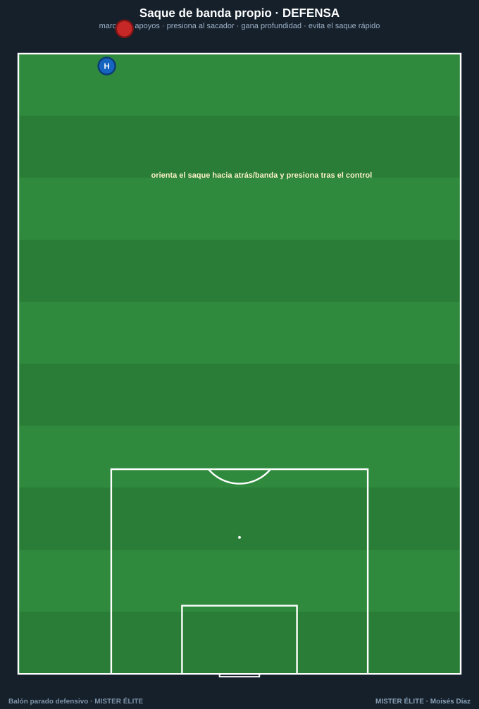
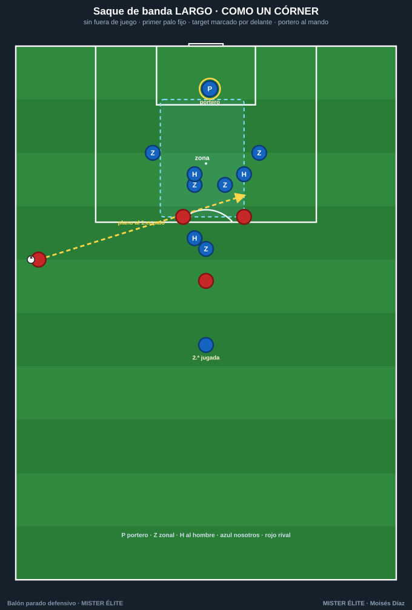

Defender los saques de banda
Una regla lo cambia todo: no existe fuera de juego en el saque de banda. Así que el fuera de juego no es un arma aquí; hay que marcar al hombre y ganar profundidad rápido, no fiarse de la línea.
Saque de banda en campo propio

- No concedas el apoyo fácil: marca las opciones cercanas del sacador (el receptor de pie, el apoyo interior, el de banda). Quita la primera línea de pase.
- Cuidado con la pared con el sacador: coloca un jugador cerca/detrás del sacador para anular el devolver-y-recibir y la superioridad.
- Orienta: deja abierta a propósito la opción hacia atrás/banda (zona pobre) y presiona tras el primer control para recuperar orientado hacia fuera.
- Evita el saque rápido: gana profundidad de inmediato del lado del saque (el lateral/extremo esprinta a su posición en cuanto se pierde el balón).
Saque de banda LARGO (tipo Delap)

El saque largo, plano y rápido cerca del área, es tan peligroso como un córner (y, al no haber fuera de juego, el rival satura el área pequeña). Se defiende como un córner:
- Marca al target del flick-on (el rematador que prolonga, casi siempre al primer palo): por delante, para que no peine.
- Defensor fijo en el PRIMER PALO (zona): corta la peinada, el remate más peligroso.
- Portero al mando: posición un paso por delante del primer palo, a un brazo, cuerpo de cara; sale a blocar o despejar con puños lo que llegue a su zona. Decide de antemano: sale o se llena el área pequeña.
- Segundas jugadas: jugadores fuera del área para recoger los rechaces.
- Roles memorizados: cada uno sabe si va al primer palo, al segundo / por detrás o mantiene su zona.
Reglas de oro
| Situación | Regla de oro |
|---|---|
| Cualquier saque | Sin fuera de juego → marca al hombre y gana profundidad ya |
| El sacador | Presiónalo/condiciónalo; cierra la primera línea de pase; orienta hacia atrás |
| Saque rápido | Esprinta a tu posición del lado del saque |
| Saque largo | Como un córner: primer palo fijo, target marcado por delante, portero al mando, segundas jugadas cubiertas |
| El portero | Decide (salir o llenar el área), pero comunicado de antemano |
Recuerda: el error nº1 en el saque de banda es subir la línea creyendo en el fuera de juego. No existe. Marca y gana profundidad.